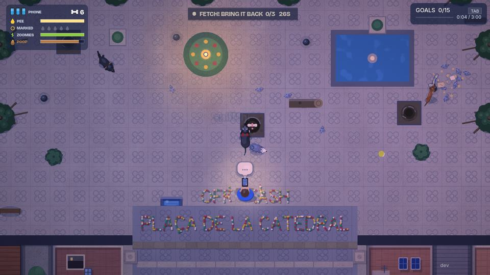

Fira de Santa Llúcia
Christmas stalls and Caga Tió
Barcelona's old Christmas market outside the cathedral at blue hour: timber booths piled with nativity moss and figurines under strung fairy garlands, potted winter pines, and a smiling striped Caga Tió log wrapped in a red barretina ready to shower torró across Plaça de la Catedral.
- Off-leash stop
- PLAÇA DE LA CATEDRAL (Open plaça)
- Beat the clock
- Under 3:00
Screenshots



Goals (15)
- Mark 5 spots
- Have 4 good long sniffs
- Get the phone home without a scratch
- Get yourself home without a bump
- Get your business bagged
- Bring the ball back 3 times
- Scarf down 2 dropped snacks
- Sniff 3 Christmas market stalls
- Mark 3 festive pines
- Dodge the Caga Tió torró drop
- Land an x3 trick combo
- Grab a marzipan figure off the stall
- Spell LEASH
- Find the hidden pernil
- Beat the clock (under 3:00)